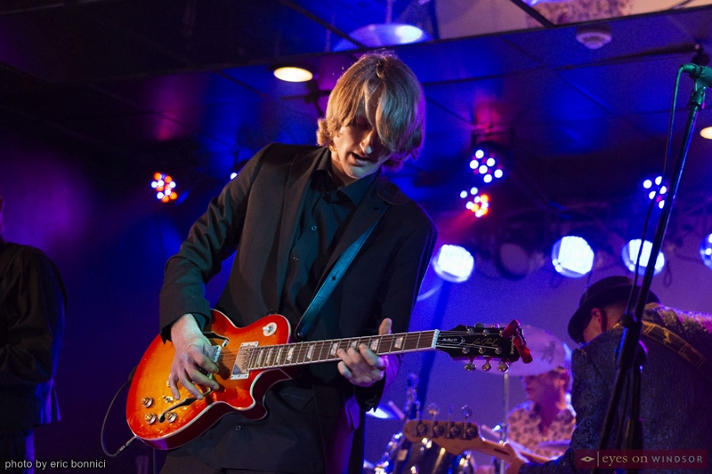
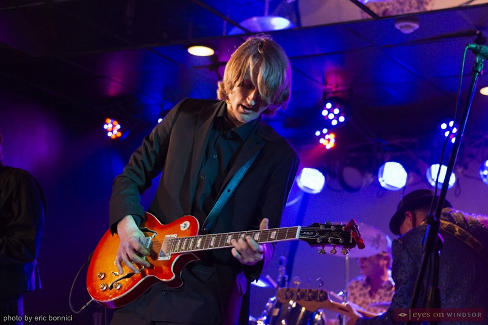

Who Are We?
Welcome to the official website of 519, a dynamic musical force hailing from the vibrant city of Windsor, Ontario. Known for our soulful blues roots and versatile exploration into the realms of rock and beyond, 519 brings a unique blend of sounds that captivate audiences and leave a lasting impression.
Our Story
Formed in [Year], 519 emerged from the rich musical tapestry of Windsor, a city with a deep appreciation for diverse musical genres. Comprising [Number of Members] seasoned musicians, our band is driven by a shared passion for the blues, channeling the raw emotion and storytelling essence of this timeless genre into our music.
Musical Style
At the heart of our sound is the blues, but we are not confined by its boundaries. 519 is known for seamlessly weaving elements of rock and other genres into our repertoire, creating a musical experience that transcends traditional boundaries. From smoky, slow-burning blues ballads to high-energy rock-infused anthems, our music is a journey through the soulful landscapes of sound.
Influences
Our musical journey has been shaped by a diverse range of influences, from the classic blues legends that paved the way to the rock icons who pushed the boundaries of sound. We pay homage to our roots while fearlessly exploring new sonic territories, creating a sound that resonates with both traditionalists and those seeking a fresh, contemporary musical experience.
Live Performances
Experience the magic of 519 live! Whether gracing intimate local venues or commanding large stages, our performances are a celebration of music and camaraderie. Check our [Events](link to events page) page for upcoming shows and join us on a musical adventure.
Discography
Explore our discography to discover the evolution of our sound. From our debut album, [Album Title], to the latest releases, each recording reflects a chapter in our musical journey. Listen on [Spotify](link to Spotify) and [Apple Music](link to Apple Music) to immerse yourself in the 519 experience.
Connect With Us
Stay connected with 519 on social media for the latest updates, behind-the-scenes glimpses, and more. Follow us on [Facebook](link to Facebook), [Instagram](link to Instagram), and [Twitter](link to Twitter) to join the conversation. Thank you for being a part of the 519 community. Whether you're a longtime fan or just discovering our music, we invite you to explore, listen, and share in the passion that fuels our musical journey.